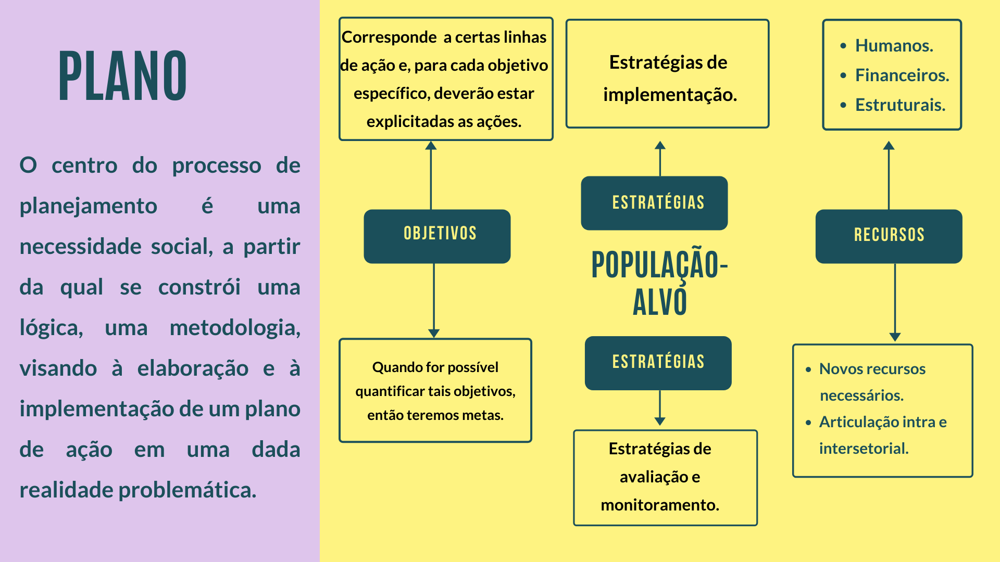

TÓPICO 2
ASPECTOS METODOLÓGICOS DO PLANEJAMENTO E PROGRAMAÇÃO EM SAÚDE NO ÂMBITO DA ATENÇÃO PRIMÁRIA À SAÚDE
TÓPICO 2
ASPECTOS METODOLÓGICOS DO PLANEJAMENTO E PROGRAMAÇÃO EM SAÚDE NO ÂMBITO DA ATENÇÃO PRIMÁRIA À SAÚDE
Acompanhe, na imagem, as etapas de um plano estratégico.
